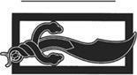

Anlaşmazlıklar
Gökgürültüsü, barut grisi ikindi göğünde gümbürdüyordu. Rand, pelerininin başlığını daha da yukarı çekerek soğuk yağmurdan biraz olsun korunmaya çalıştı. Kızıl çamurlu su birikintilerinden azimle geçiyordu. Başlık Rand'ın başının etrafında, pelerininin geri kalanı ise omuzlarında sırılsıklamdı ve kaliteli siyah ceketi de aynı derecede ıslak ve soğuktu. Hava biraz daha soğuduğunda, yağmurun yerini kar veya dolu alacaktı. Kar yakında tekrar yağacaktı; geçtikleri köylerde yaşayan insanlar o yıl en az iki kez kar yağdığını söylemişti. Ürperen Rand, neredeyse kar yağmasını diliyordu. O zaman en azından iliklerine kadar ıslanmazdı.
Sütun ağır adımlarla ilerlerken inişli çıkışlı araziyi ihtiyatla gözlüyordu. Ingtar'ın Gri Baykuş'u rüzgâr aniden patlak verdiği zamanlarda bile sarkıyordu. Hurin zaman zaman kukuletasını geri çekerek havayı kokluyordu; ne yağmur ne de soğuğun herhangi bir iz, özellikle de onun aradığı türden bir iz üzerinde herhangi bir etkisi olmadığını söylese de, Koklaycı o âna kadar hiçbir şey bulamamıştı. Rand, arkasındaki Uno'nun mırıldanarak küfrettiğini duydu. Loial eyer torbalarını kontrol edip duruyordu; kendisinin ıslanmaya itirazı yoktu, ama kitapları için endişe edip duruyordu. Kukuletasının arkaya kayıp yüzünü yağmura karşı savunmasız bıraktığını bile fark edemeyecek kadar düşünceli görünen Verin dışında herkes sefil bir haldeydi.
Rand, "Bu konuda bir şey yapamaz mısın?" diye sordu ona. Başının gerisindeki ufak bir ses kendisinin yapabileceğini söylüyordu.
Tek yapması gereken saidin'e sarılmaktı. Saidin'in çağrısı o kadar tatlıydı ki... Tek Güç'le dolmak, gazaba gelen fırtınanın sırtında yol almak, onu kamçılayarak Tümentepe'yi denizden ovaya kadar silip süpürmek. Saidin'e sarılmak... İçindeki özlemi acımasızca bastırdı.
Aes Sedai irkildi. "Ne? Ah. Sanırım yapabilirim. Biraz. Bu kadar büyük bir fırtınayı tek başıma durduramam -fazla büyük bir alanı kaplıyor- ama hızını biraz kesebilirim. En azından bizim bulunduğumuz yerde." Yüzündeki yağmuru sildi, arkaya kaydığını yeni fark etmiş gibi durduğu başlığını tekrar yukarı çekti.
"Neden yapmıyorsun o zaman?" dedi Mat. Kukuletasının altından bakan yüzü, ölümün kapısına dönük gibiydi, ama sesi canlıydı.
"Çünkü o kadar fazla Tek Güç kullanırsam, on milden daha yakındaki herhangi bir Aes Sedai, birisinin yönlendirdiğini anlar. Bu Seanchanların damane'lerinin bazılarıyla tepemize binmesini istemeyiz." Ağzını öfkeyle sıktı.
Atuan'ın Değirmeni adlı o köyde istilacılar hakkında biraz bilgi edinmişlerdi, ancak öğrendikleri şeyler akla yanıtlananlardan fazla soru getiriyordu. İnsanlar bir an bir şeyler geveledikten sonra ellerini ağızlarına kapamış, titreyerek omuzlarının üzerinden arkaya bakmaya başlamıştı. Hepsinin, Seanchanlar canavarları ve damane'leriyle birlikte geri gelecek diye ödü kopuyordu. Aes Sedai olması gereken yerde, boyunlarına hayvanlar gibi tasmalar takılmış kadınlar, köylüleri Seanchanların emrindeki, Atuan'ın Değirmeni halkının ancak fısıldayarak, kâbuslardan çıkma yaratıklar olarak betimleyebildiği tuhaf yaratıklardan daha fazla korkutuyordu. En kötüsü de, Seanchanların gitmeden önce ibret olsun diye yaptıkları insanları hâlâ iliklerine kadar donduruyordu. Ölülerini gömmüşlerdi, ama köy meydanındaki geniş, yanık alanı temizlemeye korkuyorlardı. Orada ne olduğunu hiçbiri söylemiyordu, ama Hurin köye girer girmez küsmüştü ve kararmış alanın yakınına gitmeyi reddediyordu.
Atuan'ın Değirmeni yarı yarıya terk edilmişti. Bazıları, Seanchanların güvenli bir şekilde ellerinde tuttukları bir şehirde daha az haşin davranacaklarını düşünerek Falme'ye kaçmış, bazıları da doğuya gitmişti. Gitmeyi düşündüklerini söyleyen başkaları da vardı. Söylenenlere bakılırsa, Almoth Ovası'nda Tarabonlular ile Domaniler arasında savaş vardı, ama orada yakılan evler ve ahırlar insanların ellerindeki meşalelerle ateşe verilmişti. Seanchanlıların yaptıkları, yapabilecekleri şeylerle kıyaslandığında, bir savaşla yüzleşmek bile daha kolaydı.
"Fain Boru'yu buraya neden getirdi?" diye mırıldandı Perrin. Soruyu hepsi farklı zamanlarda sormuştu ve kimsenin buna verecek bir cevabı yoktu. "Hem savaş var, hem de bu Seanchanlar ile canavarları. Neden burası?"
Ingtar eyerinde dönerek onlara baktı. Yüzü neredeyse Mat'inki kadar süzgün görünüyordu. "Her zaman, savaşın kargaşası içinde kendi lehine çevirebileceği fırsatlar gören adamlar olur. Fain de böyle biri. Şüphesiz Boru'yu tekrar, bu kez Karanlık Varlık'tan çalmayı ve kendine çıkar sağlayacak şekilde kullanmayı düşünüyor."
"Yalanların Babası asla basit planlar yapmaz," dedi Verin. "Belki de Fain'in Boru'yu yalnızca Shayol Ghul'de bilinen bir nedenle buraya getirmesini istiyordur."
"Canavarlar," diye homurdandı Mat. Artık yanakları içine çökmüştü, gözleri boştu. Sesinin sağlıklı çıkması yalnızca her şeyi daha da kötü göstermeye yarıyordu. "Bana sorarsanız birkaç Trolloc ile bir Soluk gördüler. Eh, neden olmasın? Seanchanların kendileri için savaşan Aes Sedaileri varsa, neden Soluklarla Trollocları olmasın?" Verin'i kendisine bakarken yakaladı ve irkildi. "Eh, öyleler, yularlı olsunlar, olmasınlar. Yönlendirebiliyorlar, bu da onların Aes Sedai olduğu anlamına gelir." Rand'a bir bakıp kulakları tırmalayan bir kahkaha attı. "Bu senin de Aes Sedai olduğun anlamına geliyor, Işık korusun hepimizi."
Masema önden çamur ile düzenli yağmurun arasından dörtnala geldi. "İleride bir köy daha var, Lordum," dedi atını Ingtar'ın yanında durdurarak. Gözleri Rand'ın üzerinden geçti, ama kısıldılar ve Masema bir daha Rand'a bakmadı. "Boş, Lordum. Hiç köylü yok, hiç Seanchan yok, kimse yok. Evlerin hepsi sağlam görünüyor, ancak iki üç tanesi... eh, artık yerlerinde yoklar, Lordum."
Ingtar elini kaldırdı ve atların tırısa kaldırılmasını işaret etti.
Masema'nın bulduğu köy, bir tepenin yamacını kaplıyordu. Taş duvarlardan oluşan bir çemberin etrafında, kaldırım döşeli kare şeklinde bir doruğu vardı. Evlerin hepsi taştandı, hepsinin çatısı düzdü ve çok azı birden çok katlıydı. Bir zamanlar karenin bir kenarında bulunan, daha büyük üç tanesinden geriye yalnızca kararmış moloz yığınları kalmıştı; paramparça taş bloklar ve çatı kirişleri karenin dört bir yanına saçılmıştı. Rüzgâr şiddetini arttırınca birkaç kepenk çarptı.
Ingtar, hâlâ ayakta duran yegâne büyük binanın önünde atından indi. Kapının üzerindeki gıcırdayan tabelada yıldızları havada çeviren bir kadın vardı, ama herhangi bir isim yoktu; tabelanın köşelerinden yağmur iki tekdüze sızıntı halinde iniyordu. Ingtar konuşurken Verin aceleyle içeri girdi. "Uno, bütün evleri ara. Geride kimse kaldıysa, belki bize bu Seanchanlar hakkında biraz daha fazla bilgi verebilir. Yiyecek bulursan, onu da getir. Battaniye de." Uno başıyla onayladı ve adamlarına emirler vermeye başladı. Ingtar Hurin'e döndü. "Ne kokusu alıyorsun? Fain buradan geçmiş mi?"
Hurin burnunu ovuşturarak başını iki yana salladı. "O değil, Lordum, Trolloclar da değil. Ancak bunu yapan her kimse, geride leş bir koku bırakmış." Bir zamanlar evlerin durduğu yerdeki harabeleri işaret etti. "Cinayet işlenmiş, Lordum. Orada insanlar varmış."
"Seanchanlar," diye homurdandı Ingtar. "İçeri girelim. Ragan, atlar için bir çeşit ahır bul."
Verin salonun iki tarafındaki büyük şöminelerde ateşler çoktan yakmıştı ve birinin başında ellerini ısıtıyordu; sırılsıklam pelerinini ise fayans döşeli zeminin üzerindeki masalardan birine sermişti. Birkaç mum da bulmuştu ve mumlar artık kendi yağlarına saplanmış, masalardan birinin üzerinde yanıyordu. Boşluk ve ara sıra duyulan gökgürültüsü dışında sessizlik, titreşen gölgelere eklenince odaya mağaramsı bir hava veriyordu. Rand, aynı derecede ıslak pelerinini bir masaya fırlatıp Verin'e katıldı. Yalnızca Loial, ısınmaktan çok kitaplarını kontrol etmekle ilgileniyor gibiydi.
"Bu yolla Valere Borusu'nu asla bulamayız," dedi. "Biz... buraya geleli beri üç gün geçti," -ürperdi ve bir elini saçlarının içinden geçirdi; Rand, Shienarlı'nın diğer yaşamlarında neler gördüğünü merak etti- "Falme'ye geleli beri de en az iki gün, ancak Fain veya Karanlıkdostlarmın kılına bile rastlamadık. Sahil üzerinde onlarca köy var. Şimdiye bunlardan herhangi birine gidip, gemiyle herhangi bir yere doğru yola çıkmış olabilir. Buraya geldiyse tabiî."
"O burada," dedi Verin sakince, "ve Falme'ye gitti."
"Hâlâ da burada," dedi Rand. Beni bekliyor. Lütfen, Işık, hâlâ beni bekliyor olsun.
"Hurin hâlâ onun kokusunu almadı," dedi Ingtar. Koklayıcı kendisini bu başarısızlıktan sorumlu tutuyormuş gibi omuzlarını silkti. "Neden Falme'yi seçsin ki? O köylülerin dedikleri doğruysa, Falme bu Seanchanların elindeymiş. Kim olduklarını ve nereden geldiklerini öğrenmek için en iyi köpeğimi verirdim."
"Kim oldukları bizim için önemli değil." Verin diz çöküp eyer torbalarını açarak kuru giysiler çıkardı. "Hiç değilse üzerimizi değiştirecek odalarımız var, gerçi hava değişmediği sürece bunun bize pek yararı olmaz. Ingtar, köylülerin bize söylediği şey, Seanchanların Şahinkanadı Artur'un geri dönmüş orduları olduğu pekâlâ da doğru olabilir. Asıl önemli olan Fain'in Falme'ye gitmiş olması. Fal Dara'daki zindanda bulunan yazılar-"
"-Fain'den hiç bahsetmiyordu. Beni affet, Aes Sedai, ama bu karanlık bir kehanet olduğu kadar hile de olabilirdi. Trollocların bile bize yapacakları her şeyi önceden söyleyecek kadar aptal olduklarına inanamıyorum."
Verin bükülerek başını kaldırıp ona baktı. "Tavsiyeme uymayacaksan ne yapmaya niyetlisin, peki?"
"Valere Borusu'nu almaya niyetliyim," dedi Ingtar kararlılıkla. "Beni affet, ama Trolloc'un biri..."
Verin, "Bunu yapan kesinlikle bir Myrddraal'di," diye mırıldandı, ama Ingtar durmadı bile.
"...veya kendi ağzıyla kendisine ihanet eder gibi görünen bir Karanlıkdostu tarafından çiziktirilen laflardan önce kendi sağduyuma güvenmek zorundayım. Hurin bir izin kokusunu alana veya Fain'in kendisini bulana kadar askerlerimi buraya yerleştirmeyi düşünüyorum. Boru'yu ele geçirmeliyim, Verin Sedai. Buna mecburum!"
"Yolu bu değil," dedi Hurin usulca. "'Zorundayım' demekle olmaz. Ne olacaksa, olur." Kimse ona kulak asmadı.
"Hepimiz mecburuz," diye mırıldandı Verin eyer torbalarının içine bakarak, "ancak bazı şeyler bundan bile önemli olabilir."
Başka bir şey söylemedi, ama Rand yüzünü buruşturdu. Kadından, onun kışkırtmaları ve üstü kapalı laflarından uzaklaşmaya can atıyordu. Ben Yenidendoğan Ejder değilim. Işık adına, keşke Aes Sedailerden bütünüyle kurtulabilseydim. "Ingtar, sanırım ben Falme'ye doğru yola devam edeceğim. Fain orada -orada olduğuna eminim- ve ben yakında gelmezsem, o -o Emond Meydanı'na zarar verecek bir şeyler yapacak." İşin bu kısmından daha önce bahsetmemişti.
Hepsi gözlerini dikip ona baktılar, Mat ile Perrin kaşlarını çatmıştı, endişeliydi, ama düşünüyordu; Verin bulmacaya eklenecek yeni bir parça görmüş gibiydi. Loial şaşkın görünüyordu; Hurin'in ise kafası karışık gibiydi. Ingtar'ın ise ona inanmadığı aşikârdı.
"Bunu neden yapsın ki?" dedi Shienarlı.
"Bilmiyorum," diye yalan attı Rand, "ama Barthanes'e bıraktığı mesajda bu da vardı."
"Peki Barthanes, Fain'in Falme'ye gittiğini mi söyledi?" diye sordu Ingtar. "Yo. Söylemiş bile olsa, bunun bir önemi yok." Acı bir kahkaha attı. "Karanlıkdostları için yalan söylemek, nefes almak kadar doğal bir şeydir."
"Rand," dedi Mat, "Fain'in Emond Meydanı'na zarar vermesini nasıl engelleyebileceğimi bilsem, bunu yapardım. Bunu yapacağından emin olsaydım. Ama o hançere ihtiyacım var, Rand; Hurin de onu bulmanın en iyi yolu."
"Ben sen nereye gidersen oraya gelirim, Rand," dedi Loial. Kitapların kuru olduğundan nihayet emin olmuştu ve sırılsıklam haldeki paltosunu çıkarıyordu. "Ama artık birkaç günün bir şeyi değiştireceğini sanmıyorum. Bir kez olsun daha az aceleci davranmayı dene."
"Falme'ye ha şimdi gitmişiz, ha daha sonra, ha hiç gitmemişiz, benim için hiçbir önemi yok," dedi Perrin omuzlarını silkerek, "ama Fain gerçekten Emond Meydanı'nı tehdit ediyorsa... eh, Mat haklı. Hurin onu bulmanın en iyi yolu."
"Onu bulabilirim, Lord Rand," diye araya girdi Hurin. "Bir kokusunu alayım, sizi doğrudan ona götürürüm. Başka hiçbir şey onun gibi bir iz bırakmamıştır."
"Kendi seçimini kendin yapmalısın, Rand," dedi Verin dikkatle, "ama Falme'nin hakkında yok denecek kadar az şey bildiğimiz istilacıların elinde olduğunu unutma. Falme'ye tek başına gidersen, kendini esir edilmiş ya da daha kötü bir halde bulabilirsin ve bu hiçbir işe yaramaz. Yaptığın seçim ne olursa olsun, doğru seçim olacağına inanıyorum."
"Ta'veren," diye gümbürdedi Loial.
Rand ellerini havaya kaldırdı.
Uno meydandan pelerinindeki yağmuru silkeleyerek geldi.
"Tek bir kahrolası can bile yok, Lordum. Bana kalırsa kamçılanmış domuzlar gibi kaçmışlar. Bütün hayvanlar gitmiş ve geride tek bir kahrolası atlı araba veya yük arabası da kalmamış. Evlerin yarısı kavrulasıca temellerine kadar yerle bir edilmiş. Gelecek aylık yevmiyem üzerine iddiaya girerim ki, onları kahrolası yük arabalarına yük olmaktan başka bir halta yaramadığını anladıkları kahrolası mobilyalara bakarak izleyebilirsin."
"Ya giysiler?" diye sordu Ingtar.
Uno gözlerinden birini şaşkınlıkla kırptı. "Sadece birkaç parça bir şey, Lordum. Genellikle yanlarına almaya değer bulmadıkları kahrolasıca şeyler."
"Bunlarla idare etmek zorundayız, Hurin. Dikkat çekmemeniz için seni ve elimizden geldiği kadar çok kişiyi yerli halk kılığına sokmayı düşünüyorum. İzle karşılaşana kadar kuzeyde ve güneyde iyice açılmanızı istiyorum." Başka askerler de geliyordu ve hepsi söylenenleri dinlemek için Ingtar ve Hurin'in etrafına toplandılar.
Rand ellerini şöminenin üzerindeki rafa yaslayıp alevlere baktı. Alevler ona Ba'alzamon'un gözlerini hatırlatıyordu. "Fazla zaman kalmadı," dedi. "Bir şeyin... beni Falme'ye çektiğini... ve fazla zaman kalmadığını hissediyorum." Verin'in onu izlediğini görüp haşin bir sesle ekledi. "O değil. Bulmam gereken Fain. Hiçbir ilgisi yok... onunla."
Verin başıyla onayladı. "Çark istediği gibi dokur ve hepimiz Desen'e dokunuruz. Fain buraya bizden haftalar, belki aylar önce geldi. Birkaç gün daha olacak olanları pek az değiştirebilir."
Rand eyer torbalarını yerden alarak, "Biraz uyuyacağım," diye mırıldandı. "Bütün yatakları götürmüş olamazlar."
Üst kata çıktığında gerçekten de yatak buldu, ama çok azının şilteleri hâlâ üzerindeydi ve geriye kalan şilteler de o kadar yumruluydu ki, yerde uyumanın daha rahat olabileceğini düşündü. Nihayet, şiltesi yalnızca ortada çökmüş olan bir yatak seçti. Odada tek bir ahşap sandalye ile bir ayağı sarsak bir masadan başka eşya yoktu.
Hiç çarşaf ya da battaniye olmadığından, yatmadan önce ıslak giysilerini çıkarıp kuru bir pantolon ile gömlek giydi ve kılıcını yatağın başına dayadı. Alayla, yanında bulunan örtü niyetine kullanılabilecek kuru tek şeyin Ejder sancağı olduğunu düşündü; onu eyer torbalarının içinde, güvenle kapalı olduğu yerde bıraktı.
Yağmur çatıda takırdıyor, gökgürültüsü başının üzerinde gümbürdüyor ve ara sıra bir şimşek pencereleri aydınlatıyordu. Ürpererek şiltenin üzerinde dönüp yatacak rahat bir konum ararken sancağın battaniye yerine geçip geçmeyeceğini, Falme'ye gitmesinin iyi olup olmayacağını merak etti.
Yana döndü ve Ba'alzamon sandalyenin yanında saf beyaz Ejder sancağını açmış, ellerinde tutuyordu. Oda orada daha karanlık gibiydi, sanki Ba'alzamon yağlı, kara bir bulutun kenarında duruyordu. Yüzünde iyileşmeye yüz tutmuş yanıklar birbirini kesiyordu ve Rand'ın bakışları altında zifiri karanlık gözleri bir an kaybolarak yerini uçsuz bucaksız ateş mağaralarına bıraktı. Rand'ın eyer torbaları yanındaydı, tokalar açılmıştı, sancağın durduğu yerin kapağı arkaya atılmıştı.
"Vakit yaklaşıyor, Lews Therin. Bin iplik sıkılaşıyor ve çok geçmeden bağlanıp kapana kısılacak, değiştiremeyeceğin bir yola sokulacaksın. Delilik. Ölüm. Ölmeden önce bir kez daha sevdiğin herkesi öldürecek misin?"
Rand kapıya bir göz attı, ama yatağın yanında doğrulup oturmak dışında bir hareket yapmadı. Karanlık Varlık'tan kaçmaya çalışmak ne işe yarardı? Boğazı kum gibiydi. "Ben Ejder değilim, Yalanların Babası!" dedi boğuk bir sesle.
Ba'alzamon'un arkasındaki karanlık bulandı ve Ba'alzamon gülerken kazanlar gürledi. "Beni onurlandırıyorsun. Kendini de küçültüyorsun. Seni iyi tanıyorum. Seninle bin kez karşı karşıya geldim. Senin o sefil ruhunu tanıyorum, Lews Therin Kardeşkatili." Tekrar güldü; o alevli ağzın ısısından korunmak için Rand bir elini yüzüne kapadı.
"Ne istiyorsun? Sana hizmet etmeyeceğim. İstediğin hiçbir şeyi yapmayacağım. Bunu yapmaktansa ölmeyi yeğlerim."
"Öleceksin zaten, seni solucan! Çağlar içinde kaç kez öldün, seni budala ve ölüm ne kazandırdı sana? Mezar soğuk ve kurtlar dışında yalnızdır. Mezar benimdir. Bu kez senin için tekrardoğuş olmayacak. Bu kez Zaman Çarkı kırılacak ve dünya Gölge'nin suretinde yeniden inşa edilecek. Bu kez ölümün sonsuza dek sürecek! Hangisini seçeceksin? Ebedi ölümü mü? Yoksa ebedi yaşamı mı -ve de kudreti!"
Rand ayağa kalktığını fark etmedi bile. Boşluk etrafını sarmıştı, saidin oradaydı ve Tek Güç içine aktı. Bu gerçek neredeyse boşluğu çatlatacaktı. Bu gerçek miydi? Bir düş müydü? Bir düşte yönlendirebilir miydi? Ama içine dolan sel şüphelerini alıp götürdü. Onu Ba'alzamon'a fırlattı, Tek Güç'ü, Zaman Çarkı'nı döndüren kuvveti, denizleri yakıp dağları yiyebilecek kuvveti ona doğru fırlattı.
Ba'alzamon, sancağı önünde sıkı sıkı tutarak yarım adım geriledi. İri gözleri ve ağzında alevler harlandı ve karanlık onu gölgeye bürür gibi göründü. Gölge'ye. Güç o kara pusun içine çöktü ve kavrulmuş kumlarda yiten su gibi emilerek ortadan kayboldu.
Rand, saidin'i çekti, daha fazla, daha da fazla. Teni ona o kadar soğuk geliyordu ki, sanki dokunsalar paramparça olacaktı; fokurdayarak buharlaşıyormuş gibi yanıyordu. Kemikleri tuzla buz olup, soğuk, kristal küllere dönüşmenin eşiğindeydi sanki. Umurunda değildi; bu yaşamın kendisini içmek gibiydi.
"Aptal!" diye kükredi Ba'alzamon. "Kendini yok edeceksin!"
Mat. Bu düşünce onu tüketen selin ötesinde bir yerde yüzüyordu. Boru. Fain. Emond Meydanı. Henüz ölemem.
Nasıl yaptığına emin olamadı, ama Güç gitmişti, saidin de, boşluk da öyle. Denetimsiz bir şekilde titreyerek yatağın yanında dizlerinin üzerine çöküp seğirmelerine engel olmak için kollarını boş yere bedenine sararak oturdu.
"Bu daha iyi, Lews Therin." Ba'alzamon sancağı yere fırlattı ve ellerini sandalyenin arkasına koydu; parmaklarının arasından dumanlar yükseliyordu. Artık etrafında gölge yoktu. "İşte sancağın, Kardeşkatili. Sana hiçbir yararı olmayacak. Bin yılda çekilen bin iplik seni buraya getirdi. Çağlar boyunca dokunan on bin iplik seni kurbanlık koyun gibi bağlıyor. Çark'ın kendisi seni Çağlar boyunca kaderine esir tutuyor. Ama ben seni serbest bırakabilirim. Seni korkak it, tüm dünyada bir tek ben sana Güç'ü nasıl kullanacağını öğretebilirim. Delirmeden önce seni öldürmesine sadece ben engel olabilirim. Deliliğe bir ben engel olabilirim. Bana daha önce hizmet ettin. Bana tekrar hizmet et, Lews Therin, ya da sonsuza dek yok olursun!"
"Benim adım," dedi Rand kendisini sıktığı dişlerinin arasından konuşmaya zorlayarak, "Rand al'Thor." Ürpertiler yüzünden gözlerini kapamak zorunda kaldı ve onları tekrar açtığında yalnızdı.
Ba'alzamon gitmişti. Gölge gitmişti. Eyer torbaları sandalyenin yanında, tokaları bağlı, bir tarafı Ejder sancağı yüzünden şişkin halde, aynı bıraktığı gibi duruyordu. Ama sandalyenin arkalığında, kavrulmuş parmak izlerinden hâlâ duman tutamları yükselmekteydi.